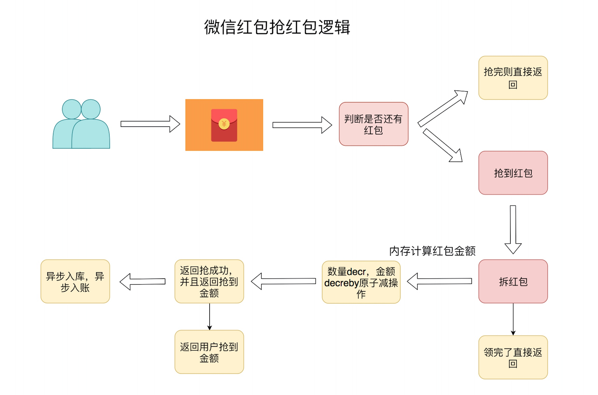
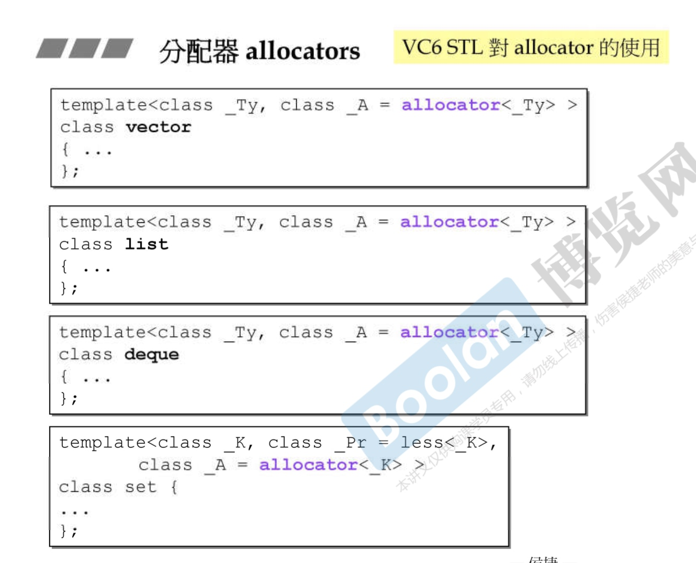
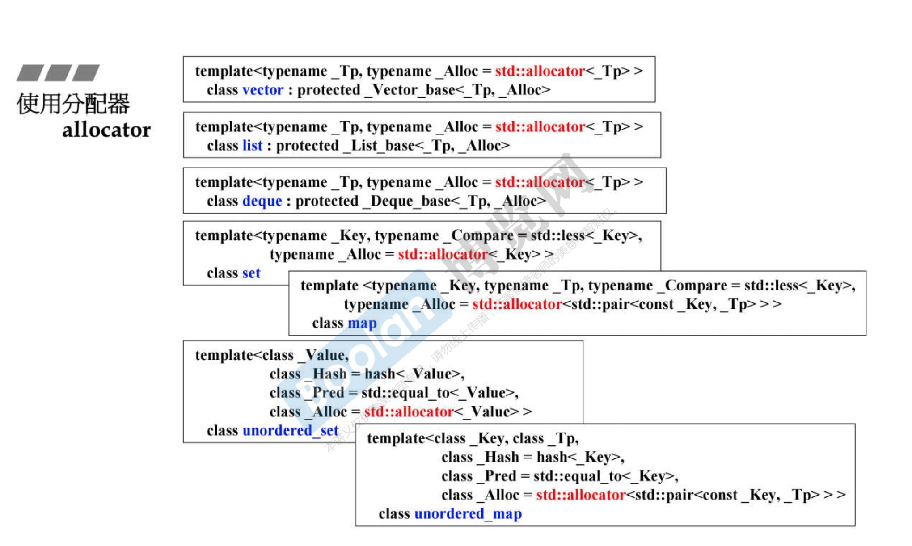

直播消息
数据结构

- zset 展示直播打赏列表

生命的意义是成为你自己！

CREATE TABLE `red_packet_info` (
`id` int(11) NOT NULL AUTO_INCREMENT,
`red_packet_id` bigint(11) NOT NULL DEFAULT 0 COMMENT '红包id，采用timestamp+5位随机数', `total_amount` int(11) NOT NULL DEFAULT 0 COMMENT '红包总金额，单位分',
`total_packet` int(11) NOT NULL DEFAULT 0 COMMENT '红包总个数',
`remaining_amount` int(11) NOT NULL DEFAULT 0 COMMENT '剩余红包金额，单位分', `remaining_packet` int(11) NOT NULL DEFAULT 0 COMMENT '剩余红包个数',
`uid` int(20) NOT NULL DEFAULT 0 COMMENT '新建红包用户的用户标识',
`create_time` timestamp COMMENT '创建时间',
`update_time` timestamp NOT NULL DEFAULT CURRENT_TIMESTAMP ON UPDATE CURRENT_TIMESTAMP
COMMENT '更新时间', PRIMARY KEY (`id`)
) ENGINE=InnoDB AUTO_INCREMENT=1 DEFAULT CHARSET=utf8mb4 COMMENT='红包信息表，新建一个红包插 入一条记录';
CREATE TABLE `red_packet_record` (
`id` int(11) NOT NULL AUTO_INCREMENT,
`amount` int(11) NOT NULL DEFAULT '0' COMMENT '抢到红包的金额',
`nick_name` varchar(32) NOT NULL DEFAULT '0' COMMENT '抢到红包的用户的用户名',
`img_url` varchar(255) NOT NULL DEFAULT '0' COMMENT '抢到红包的用户的头像',
`uid` int(20) NOT NULL DEFAULT '0' COMMENT '抢到红包用户的用户标识',
`red_packet_id` bigint(11) NOT NULL DEFAULT '0' COMMENT '红包id，采用timestamp+5位随机
数',
`create_time` timestamp COMMENT '创建时间',
`update_time` timestamp NOT NULL DEFAULT CURRENT_TIMESTAMP ON UPDATE CURRENT_TIMESTAMP
COMMENT '更新时间', PRIMARY KEY (`id`)
) ENGINE=InnoDB AUTO_INCREMENT=1 DEFAULT CHARSET=utf8mb4 COMMENT='抢红包记录表，抢一个红包插 入一条记录';



const (
Readable = 1 << iota
Writable
Executable
)
a := [...]int{1,2,3,4}
b := [...]int{1,2,3,4}
1 &^ 0 -- 1
1 &^ 1 -- 0
0 &^ 1 -- 0
0 &^ 0 -- 0


func TestSwitchCaseCondition(t *testing.T) {
for i := 0; i < 5; i++ {
switch {
case i%2 == 0:
t.Log("Even")
case i%2 == 1:
t.Log("Odd")
default:
t.Log("unknow")
}
}
}






*
Int nSend(int sockfd, char *buffer, int length) {
int result = poll(&pfd, 1, 1);
if (pfd.revents & POLLRDHUP) {
return idx;
}
return send(sockfd, buffer, length, 0);
}
Int nRecv(int sockfd, char *buffer, int length) {
int result = poll(&pfd, 1, 1);
if (pfd.revents & POLLRDHUP) {
return idx;
}
return recv(sockfd, buffer, length, 0);
}
Int nSend(int sockfd, char *buffer, int length) {
int result = poll(&pfd, 1, 1);
if (pfd.revents & POLLRDHUP) {
return idx;
}
return send(sockfd, buffer, length, 0);
}
Int nSend(int sockfd, char *buffer, int length) {
int result = poll_inner(&pfd, 1, 1);
if (pfd.revents & POLLRDHUP) {
return idx;
}
return send(sockfd, buffer, length, 0);
}